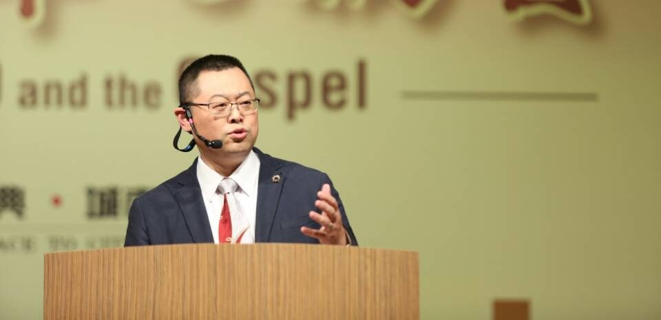

跳转到主要内容
2022年度世界人权报告
关于我们
我们是谁
工作领域
我们如何运作
我们的工作
信息安全
警察暴力
守护抗议
审查及言论自由
气候变化
区域/国家
中国
新疆
香港
美国
缅甸
马来西亚
如何参与
为人权不停笔
网络联署
加入我们
人权公开课
订阅人权新闻通讯
最新消息
订阅人权电子报
Search
2022年度世界人权报告
关于我们
关于我们
我们是谁
工作领域
我们如何运作
我们的工作
我们的工作
信息安全
警察暴力
守护抗议
审查及言论自由
气候变化
区域/国家
区域/国家
中国
新疆
香港
美国
缅甸
马来西亚
如何参与
如何参与
为人权不停笔
网络联署
加入我们
人权公开课
订阅人权新闻通讯
最新消息
订阅人权电子报
Search
主题
内容类别
区域/国家
上一个
下一个
2 个结果
排序
最新
最新
最旧
标题 - 升序
标题 - 降序
新闻
2022年9月12日
中国：拖延已久的联合国报告，必须推动对新疆危害人类罪的追责

新闻
2019年12月30日
中国：王怡被判重刑令人震惊，是对宗教自由的嘲弄